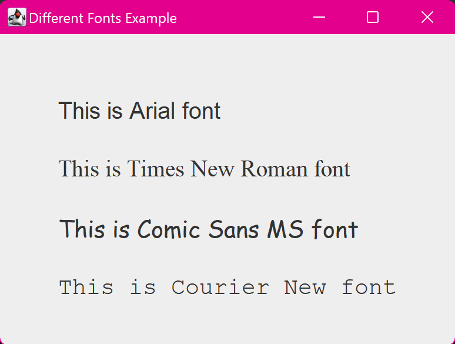

15. Java Program to Display Text in Different Fonts
import javax.swing.*;
import java.awt.*;
class main {
public static void main(String[] args) {
// Create a JFrame to hold the labels
JFrame frame = new JFrame("Different Fonts Example");
// Create labels with text
JLabel label1 = new JLabel("This is Arial font");
JLabel label2 = new JLabel("This is Times New Roman font");
JLabel label3 = new JLabel("This is Comic Sans MS font");
JLabel label4 = new JLabel("This is Courier New font");
// Set different fonts for each label
label1.setFont(new Font("Arial", Font.PLAIN, 20));
// Arial font
label2.setFont(new Font("Times New Roman", Font.PLAIN, 20));
// Times New Roman font
label3.setFont(new Font("Comic Sans MS", Font.PLAIN, 20));
// Comic Sans MS font
label4.setFont(new Font("Courier New", Font.PLAIN, 20));
// Courier New font
// Set bounds for the labels
label1.setBounds(50, 50, 300, 30);
label2.setBounds(50, 100, 300, 30);
label3.setBounds(50, 150, 300, 30);
label4.setBounds(50, 200, 300, 30);
// Set the layout to null so that we can manually position
the labels
frame.setLayout(null);
// Add the labels to the frame
frame.add(label1);
frame.add(label2);
frame.add(label3);
frame.add(label4);
// Set frame properties
frame.setSize(400, 300);
frame.setDefaultCloseOperation(JFrame.EXIT_ON_CLOSE);
frame.setVisible(true);
System.out.println("Program is ready to display text in
different fonts.");
}
}
